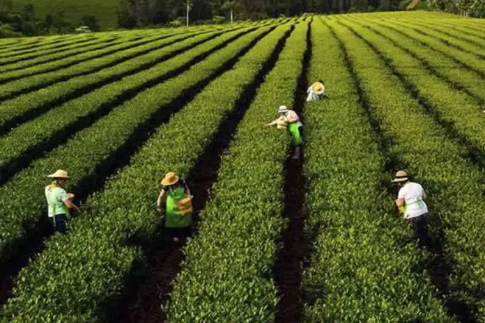
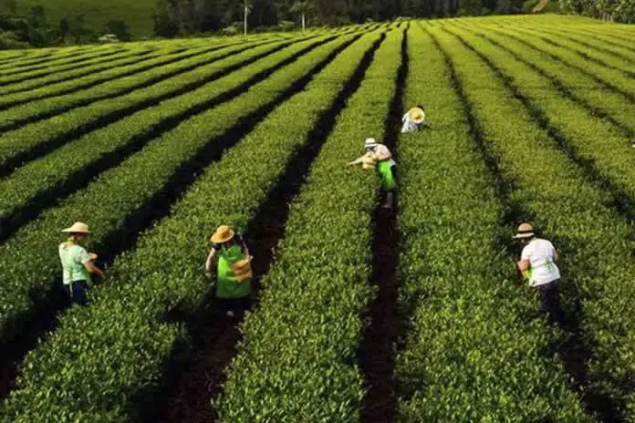

Taragüi 1kg
$3000
La Merced 500g
$3500

Rosamonte 1kg
$2800

Playadito 1kg
$2900

CBSé 1kg
$3100
$3000
$3500
$2800
$2900
$3100
Yerba mate is mainly cultivated in the provinces of Misiones and Corrientes, in northeastern Argentina. The process begins with the growth of seedlings in nurseries, which are later transplanted to the fields where they grow for several years until reaching maturity. The harvest generally takes place between April and September, using either traditional or mechanized methods.
The leaves are carefully selected, dried, and aged to achieve the characteristic flavor of each brand. This process ensures that yerba mate preserves its natural properties and unique aroma, ready to be enjoyed in hot or cold mates, both in Argentina and around the world
 


The ritual of preparing mate is very important to fully enjoy yerba mate. Here we show you the basic steps:

Step 1: Fill the mate about three-quarters full with yerba.

Step 2: Tilt the gourd to create the traditional mound of yerba.

Step 3: Pour a bit of warm water into the hollow of the yerba.

Step 4: Insert the straw (bombilla) and pour hot water (not boiling).